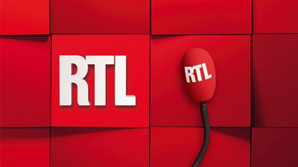

Radio RTL live : le direct, les émissions, les horaires et les infos utiles
- Appuyez sur play pour démarrer le live RTL radio
0:00
0:00
Ecouter RTL, la radio qui bouge

Radio RTL Présentation
RTL (Acronyme de Radio Télé Luxembourg) est une station très écoutée en France. Elle diffuse des émissions conviviales et proche du public et particulièrement les nouveautés musicales et les grands hits.
RMC Contacts
| Site Web Officiel: | Site de RTL Direct |
|---|---|
| Page facebook Officielle: | Page facebook officielle de RTL Direct |
| Téléphone (Standard): | 01 40 70 40 70 ou 3210(surtaxé) ou 0800 230 044 |
| Fax: | 01 40 70 03 84 |
| Adresse: | 22, Rue Bayard 75008 Paris |
La liste des programmes de Direct RTL
La grille avec les horaires est décrite dans le tableau, suivez les liens pour plus de détails :
| Emission | Animateurs | Type |
|---|---|---|
| RTL PETIT MATIN | Stephane Carpentier | Actualité, Talk |
| RTL MATIN | Yves Calvi | Actualité, Talk |
| Laissez vous tenter | Yves Calvi | Actualité, Talk |
| ça peut vous arriver | Julien Courbet | Show |
| A la bonne heure | Stéphane Bern | |
| RTL Midi | Vincent Parizot & Christelle Rebière | |
| L’heure du Crime | Jacques Pradel | |
| On est fait pour s’entendre | Flavie Flament | |
| Les grosses têtes | Laurent Requiier | |
| RTL Soir | Marc-Olivier Fogiel | |
| On refait le monde | Marc-Olivier Fogiel | |
| La curiosité est vilan défaut | Thomas Hugues & Sidonie Bournec | |
| RTL Grand Soir | Christophe Pacaud & Agnès Bonfillon | |
| La collection Géroges Lang | Grorges Lang | |
| Les nocturnes | Grorges Lang | |
| Soir de ligue des champion | Sylvain Charley & Bertrand Latour | |
| Vincent de 5 à 7 | Vincent Perrot | |
| RTL Week-end | Bernard Poirette | |
| Stop ou Encore | Vincent Perrot | |
| Allo Bouvard | Phillipe Bouvard | |
| Journal Inattendu | ||
| Le grand Studio RTL | Eric Jean-Jean | |
| RTL Soir weekend | Phillipe Robuchon | |
| On refait le match | Pascal Praud | |
| Multiplex RTL-Ligue 1 | Christian Olivier & Pascal Praud | |
| La première heure de la semaine | Eric Jean-Jean | |
| Le grand Jury | Olivier Mazerolle | |
| 100% Live | Eric Jean-Jean | Débat |
| RTL en direct de l’Equipe | Eric Silvestro & Bertrand Latour | Football |
| Le Club Liza | Bixente Lizarazu | Football |
| Soir de Ligue 1 | Eric Silvestro & Sylvain Charley | Football |
| L’heure du Jazz | Jean-Yves Chaperon | Musique |